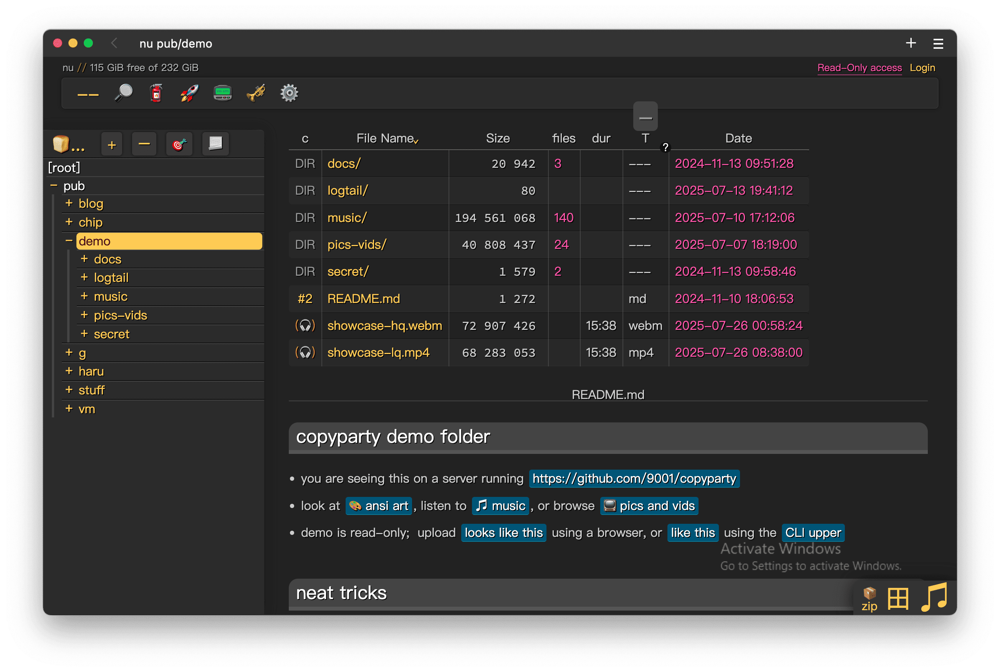
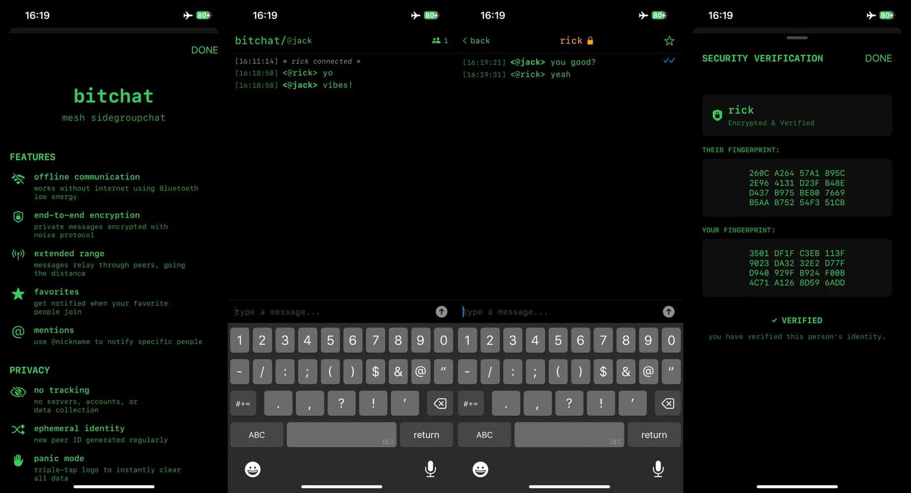
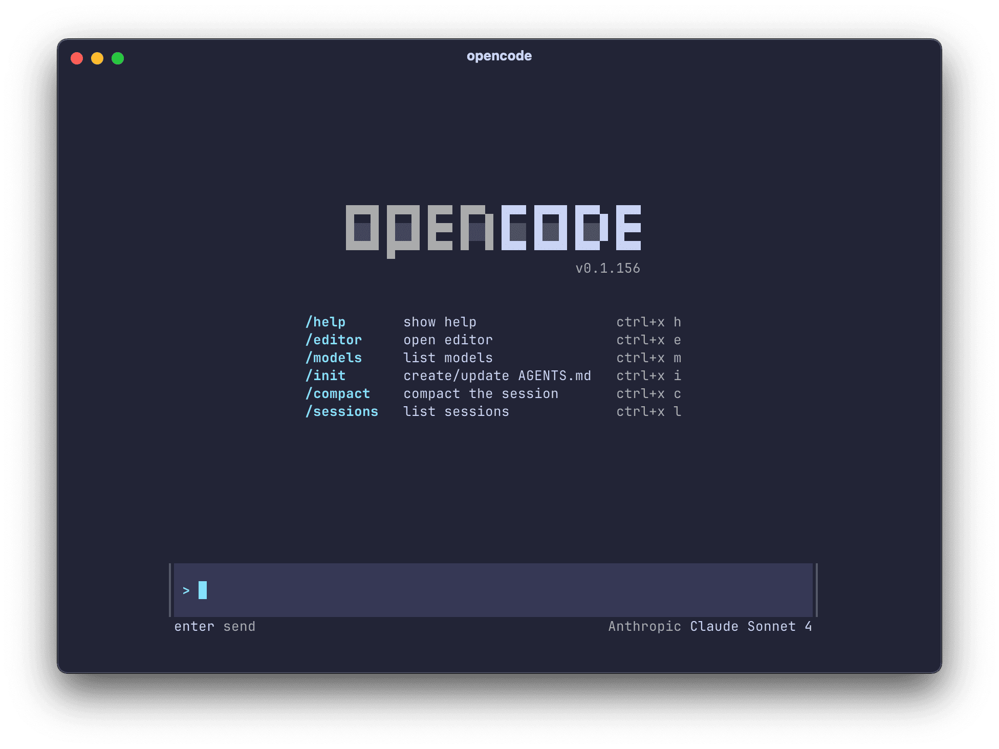
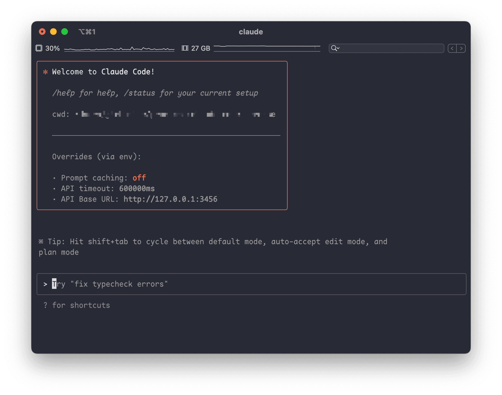
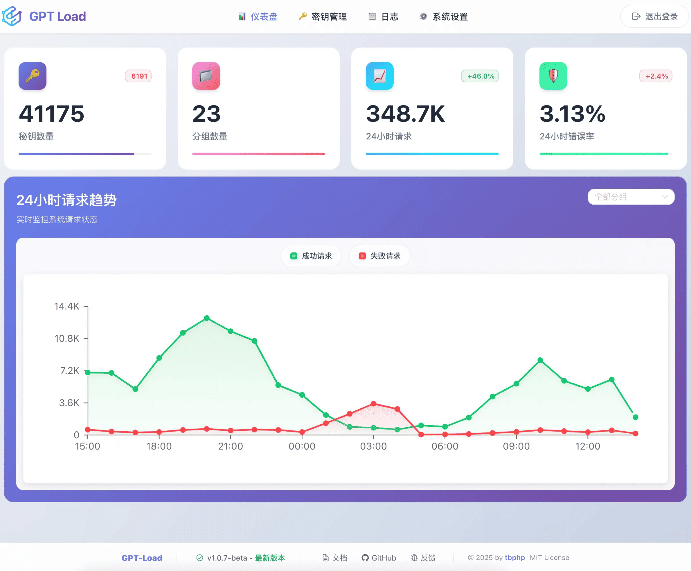
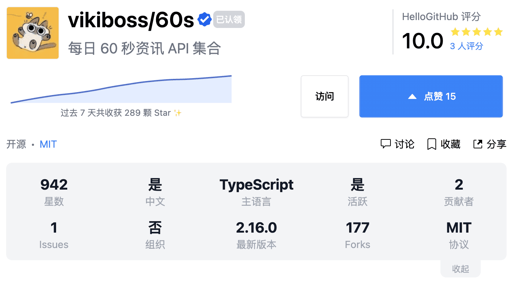

朋友们，GitHub 热点速览并没有“停更”哦！
最近断更，是因为榜单几乎被大模型“霸占”：GLM-4.5（智谱）、Step3（阶跃星辰）、Intern-S1（上海人工智能实验室）、K2（Kimi）等相继开源。我虽然写了单篇介绍 GLM-4.5，但面对这波大模型扎堆开源实在难以一一详述。感兴趣的同学，建议直接“啃”相关论文或技术报告。
这两天，开源社区热议的事件莫过于「KubeSphere 闭源删库」，这款基于 K8s 的多云和容器管理平台，其团队已决定将前端代码闭源，并删除所有已发布文档和安装镜像，令人唏嘘不已！更多讨论可以看看这篇前核心团队成员的解读。
回到本周的热门开源项目，直冲云霄的是一周涨了 19k Star 的 copyparty，这是一个基于 Python 的文件服务项目，尽管 Python 自带 FTP 服务，但它却凭借对文件服务的极致打磨，赢得了广大开发者们的认可。此外，还有一款基于蓝牙的即时通信应用也让人眼前一亮。
最后，如果你还没找到顺手的终端 AI 编程助手，可以试试完全开源的 opencode 和让 Claude Code 连接任意大模型的工具 claude-code-router。
· 本文目录
· 1\. 热门开源项目
· 1.1 单文件的全能文件服务：copyparty
· 1.2 开源的城市交通仿真工具：SUMO
· 1.3 基于蓝牙的即时通信应用：bitchat
· 1.4 开源的终端 AI 编程助手：opencode
· 1.5 让 Claude Code 连接任意大模型的工具：claude-code-router
· 2\. HelloGitHub 热评
· 2.1 企业级的多渠道大模型 API 管理平台：gpt-load
· 2.2 每日 60 秒资讯 API 集合：60s
· 3\. 结尾
1. 热门开源项目
1.1 单文件的全能文件服务：copyparty

主语言：Python，Star：19k，周增长：17k
这是一款基于 Python 开发的多功能文件服务，所有功能集成在单个 Python 文件，零依赖、仅需一条命令即可启动。通过浏览器即可完成文件浏览、上传、下载、在线播放等操作，并支持多线程加速上传、断点续传和文件去重等功能。除了网页访问，还兼容 WebDAV、FTP、TFTP 等多种文件传输协议。
GitHub 地址→github.com/9001/copyparty
1.2 开源的城市交通仿真工具：SUMO
主语言：C++，Star：3.4k，周增长：500
这是一款开源的微观多模式交通模拟工具包，能够精准模拟从汽车到行人在内的各类交通参与者。它由德国航空航天中心（DLR）的交通系统研究所开发，具备处理大规模路网的能力，支持机动车、非机动车及行人的多模式交通模拟，并内置场景快速创建与编辑工具，适用于交通规划、自动驾驶、智能交通、环境影响评估等应用场景。
GitHub 地址→github.com/eclipse-sumo/sumo
1.3 基于蓝牙的即时通信应用：bitchat

主语言：Swift，Star：20k，周增长：800
这是一款无需服务器的蓝牙即时通讯应用，专为无网络环境设计。它通过结合蓝牙 Mesh 和 Nostr 协议，实现端到端加密的点对点通信，支持消息重试、离线转发、多用户、自动发现等功能，适用于救灾志愿者、野外探险队等小范围即时沟通场景。
GitHub 地址→github.com/permissionlesstech/bitchat
1.4 开源的终端 AI 编程助手：opencode

主语言：Go，Star 17k，周增长：1.2k
该项目是专为终端环境打造的 AI 智能编码助手，可灵活切换或混合调用多种模型。它完全开源、开箱即用，支持 Anthropic、OpenAI、Google 和离线本地模型。
GitHub 地址→github.com/sst/opencode
1.5 让 Claude Code 连接任意大模型的工具：claude-code-router

主语言：TypeScript，Star 9.9k，周增长：2.1k
这是一个专为 Claude Code 设计的增强工具，旨在突破对单一模型提供商的依赖。它在 Anthropic 官方 CLI 基础上增加了可插拔的代理层，只需一条命令即可在对话中实时切换底层模型，支持请求/响应转换和 GitHub Actions 集成等功能。
GitHub 地址→github.com/musistudio/claude-code-router
2. HelloGitHub 热评
在此章节中，我们将为大家介绍本周 HelloGitHub 网站上的热门开源项目，我们不仅希望您能从中收获开源神器和编程知识，更渴望“听”到您的声音。欢迎您与我们分享使用这些开源项目的亲身体验和评价，用最真实反馈为开源项目的作者注入动力。
2.1 企业级的多渠道大模型 API 管理平台：gpt-load

主语言：Go
这是一款用 Go 语言开发的企业级大模型接口管理平台，支持 OpenAI、Gemini、Claude 等多种服务。它开箱即用、内置 Web 管理界面、保留原生 API 格式，支持密钥自动轮询、故障切换和水平扩展，专为高并发生产环境而设计。
项目详情→hellogithub.com/repository/tbphp/gpt-load
2.2 每日 60 秒资讯 API 集合：60s

主语言：TypeScript
该项目集合了包括每日新闻、实时票房、汇率、热搜榜、随机段子等多种数据的 API 服务。
项目详情→hellogithub.com/repository/vikiboss/60s
3. 结尾
以上就是本期「GitHub 热点速览」的全部内容，希望这些开源项目能激发你的兴趣，帮助你找到下一个想要尝试的工具！如果你也发现了好玩、有趣的 GitHub 开源项目想要分享，欢迎来 HelloGitHub 与我们交流心得、讨论使用体验。
往期回顾
· 一周 Star 破万的开源项目
· 3 个超火的开源项目